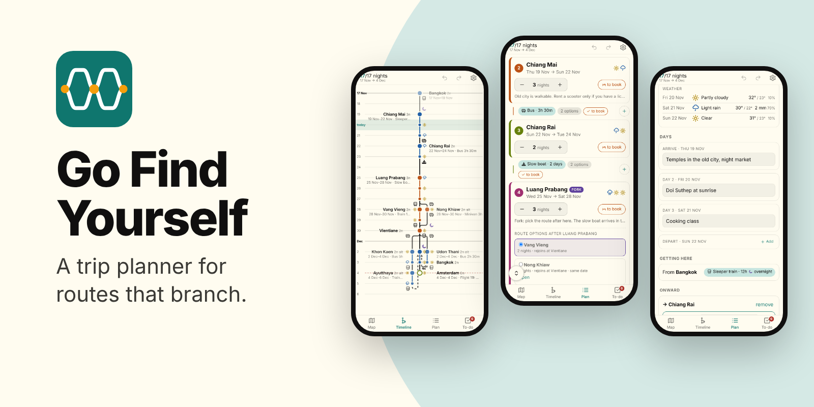
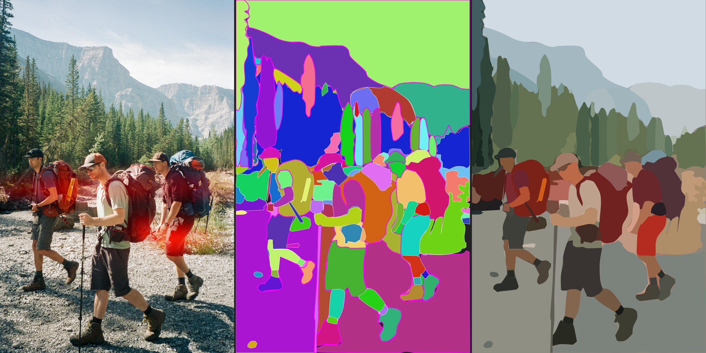

find-your-self source
Trip planner for routes that branch. Works offline; data stays on your device or in a GitHub repo, so AI can edit it.
Hello, my name is Barton and I'm a biophysics researcher focused on single-molecule biophysics.
I have a passion for good and beautiful plots: see my Python package plotfair. I hate Overleaf and the default LaTeX aesthetic: see my VS Code TeX template. I also like to get busy with other projects. They're very much vibe coded, but I think they could be of use to others anyway 😁
For travelling I made a trip planning web app, Go Find Yourself, which uses a GitHub backend for remote storage for static sites: pages-storage. I also love the game Pixies, so I made an online scorecard tracker, alternate rules and a bot you can practise against.

Trip planner for routes that branch. Works offline; data stays on your device or in a GitHub repo, so AI can edit it.
Remote storage for static sites, using each person's own GitHub account. The backend behind Go Find Yourself.

Score card tracker for the board game Pixies, alternate rules, and a bot to practise against.

Image tracing that understands the picture: SAM 2.1 / SAM 3 segmentation, one flat-colour SVG path per object.

Matplotlib and Plotly defaults, plus colour palettes and perceptual colormaps, for posters, presentations and reports.